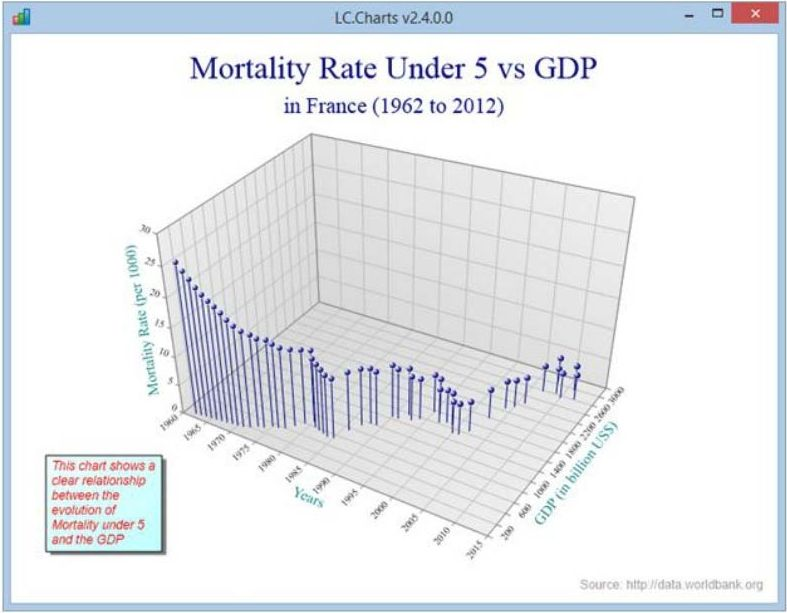

APL2000 Update
Vector 26:4, page 17
Introduction¶
APL2000 continues our commitment to developing high quality, feature-rich APL programming products by creating new features and enhancements to improve performance, enhance the experience and expand the reach of APL users.
APL+Win product development focuses on:¶
- Identification and implementation of performance improvements
- Maintain, to the extent possible, compatibility of customer-developed application software with future versions of APL+Win
- Develop convenient APL+Win interfaces to other environments
What's new in APL+Win V15.0¶
New and improved system functions¶
- Improved
⎕FX
The⎕FXsystem function has been improved to allow the argument to be a nested vector of character vectors (or scalars), rather than requiring it to be a matrix. - New
⎕CM- Character Matrix
The new Character Matrix system function,⎕CM, can be used to normalize a character argument into a character matrix result. Like the⎕FXsystem function,⎕CMaccepts as its argument a nested or heterogeneous array of any rank, gluing all items together into a character matrix. - New
⎕CV- Character Vector
The⎕CVsystem function can be used to normalize a character vector argument into a character vector result. By default, the character vector result is⎕TCNLdelimited. However, an optional left argument is available that can specify a different line delimiter. - New
⎕guid- Global Unique Identifier Generator
The⎕guidsystem function is used to obtain a character vector containing a new Global Unique Identifier (GUID). The result may be used as a persistent unique identifier with a high degree of certainty.
New and improved system variables¶
- New
⎕CRLF- Newline + Linefeed
The⎕CRLFsystem variable returns a two element vector consisting of (⎕TCNL,⎕TCLF) and is a convenient left argment to⎕CVfor producing standard Windows delimited output. In C/C++/C# this is the “\r\n“ sequence. - Improved
⎕rl- Random Link
The⎕rlsystem variable has been updated to support several additional pseudo-random number generation algorithms to complement the previously available algorithm.
New primitives¶
- Colon primitive (
:)
A colon prefix followed by a space (colon-space) at the beginning of a statement in a user defined function will suppress the output on any line of execution including the :THEN expression in Inline Control Structures. - New Sink primitive (
←)
The sink primitive suppresses the output from any line of execution in immediate execution in the session and user defined function when executed monadically.
Additional enhancements¶
- The APLW.WS ActiveX Server object now supports being instantiated by a
32–bit non–APL+Win client application. Note that this enhancement facilitated renaming the XStart method to XInit. - SendInput Windows functions added to APLWADF.INI and APLW*.ADF files.
- The updated aplw.exe.manifest and aplwr.exe.manifest files enable the GetVersionEx Windows function to now correctly detect and report the version number as 6.3 for the Windows 8.1 and Windows Server 2012 R2 operating systems.
APL+Win C# script engine to access the features of the Microsoft .Net Framework directly from APL+Win.¶
The CSE enables an APL programmer to create multiple instances of the CSE object in memory space separate from that of the initiating APL+Win instance. With the CSE, APL+Win data can be passed to a C# object, where it can be manipulated using the extensive Microsoft .Net Framework and the result can be returned as APL+Win data.
APL+Win C# script engine updates:¶
- The CSE instance properties 'replstr' and 'usereplstr' properties have been implemented.
- The [CSE] section of the APL+Win .ini file can now be used to set the default values of the CSE 'unicode' and 'usereplstr' properties.
- The CSE system object property 'version' has been implemented so that it is not necessary to create an instance of the CSE to check the currentlyinstalled version of the CSE on the target workstation.
- For .Net custom events subscribed by APL+Win the
⎕cargsystem variable is available. - The values of the APL+Win system variables
⎕cselfand⎕cargwill not be saved with the workspace because if they were so saved when that workspace was loaded these system variable values would not represent existing objects. - The CSE Script Engine Manual and the associated 'CSE Code Samples' folder has been updated.
APLNext Supervisor for multi-threaded processing in APL+Win applications¶
The APLNext Supervisor exploits available multiple processors on a workstation to significantly improve APL+Win application system performance. Application systems that are calculation-intensive, and have sections of the processing algorithm that can be asynchronously executed, are best suited to take advantage of multi-core processing.
APLNext Supervisor updates:¶
New Methods¶
- 'StartSync' and 'ExecuteAPL' methods for the 'sync' operation mode with potential for improved performance and simplified application system architecture.
- 'GetDebug' and 'SetDebug' to provide verbose log entries for extended debugging information.
New events¶
- New 'ProcessProgressCallback' Event. The 'kernel' function can trigger this event by using the APL+Win 'Notify' method to provide processing stauts and feedback to the 'ProcessProgressCallback' event handler in the domain of the 'controlling application.'
- 'ProcessAllDoneCallback' Event has been enhanced.
New error messages¶
- If the 'Start' method is used after using the 'StartSync', an exception "APLSupervisor started for sync execution already." will be thrown.
- If the 'StartSync' or 'ExecuteAPL' method is used after using the 'Start' method, an exception "APLSupervisor started for async execution already." will be thrown.
Documentation enhancements¶
- NProcessors property example
- Application system architecture options for using the Supervisor
- Events section improved
- APLNext Supervisor FAQ has been updated
- The "Debugging the 'Kernel' function" section has been update
APLNext Supervisor deployment tool¶
- Digitally signed .msi
- Additional options such as silent install.
Sample applications enhancements¶
- APL+Win 'supervisortest.w3' for a 'pure' APL sample application
- 'APLNext.SCS' Visual Studio 2013 solution illustrates the use of C# as the 'controlling application' and APL+Win 'kernel' functions performing the processing requested by the 'controlling application.' The 'async' sample in this solution illustrates the 'ProcessProgressCallback' event.
- Set the 'maxpool' configuration property under program control
- Use 'sync' or 'async' mode
- Use events with the 'async' mode
- Sample 'controlling app' and 'kernel function' for each mode
LC.Charts v2.4.0.0: A no-Cost ActiveX component for 2D & 3D charts in APL+Win¶
Using this component, (implemented and maintained by Lescasse Consulting), APL+Win based application system data may be graphically visualized as two-or-three-dimensional charts.
- Charts may be defined with an APL+Win user command or with the APL+Win
⎕wisystem function. - Chart objects may be embedded in an APL+Win form or an independent C# form.
- Performance of the component is excellent, e.g. 200,000 points drawn in 100 milliseconds.
- An extensive object model including more than 150 properties, methods and events to facilitate custom annotations, legends, gradients, styles, fonts, formats, titles, etc.
- An included APL+Win user command file provides APL+Win functions illustrating LC.Charts usage.
- LC.Charts may be deployed in your APL+Win-based application system if that application system provides significant additional functionality beyond that of charting.
LC.Charts requires APL+Win v15 and Microsoft .Net Framework 4.0.

Consulting and training¶
APL2000 provides comprehensive consulting services to address design, development, implementation, conversion, update, enhancement and deployment of APL based application software systems. We also offer all levels of APL training – live seminars, online in a virtual classroom, videos and self-directed tutorials.
For information about APL2000 products and services or to obtain a no-cost trial version of APL+Win contact sales@apl2000.com.